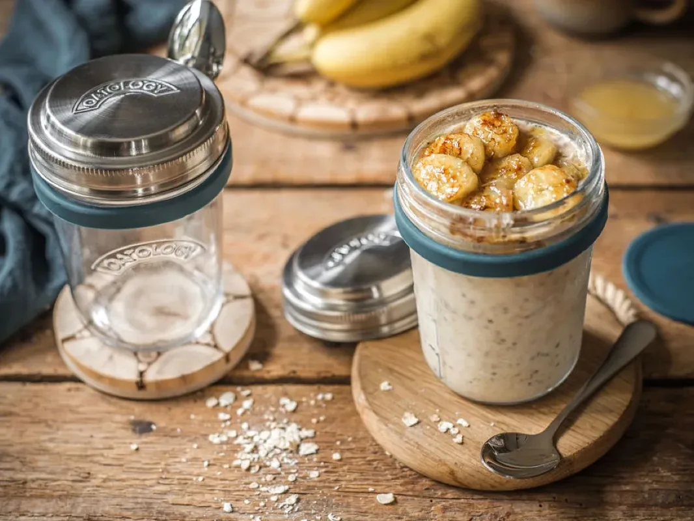
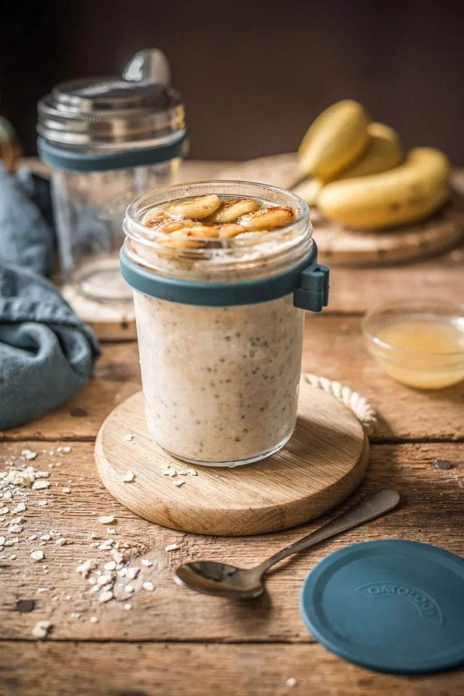
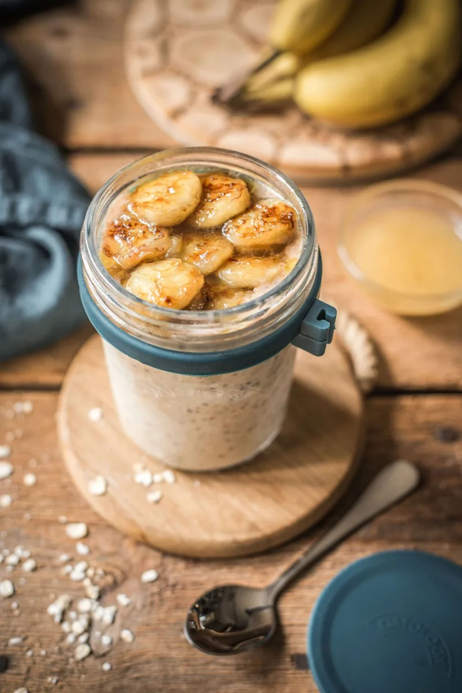
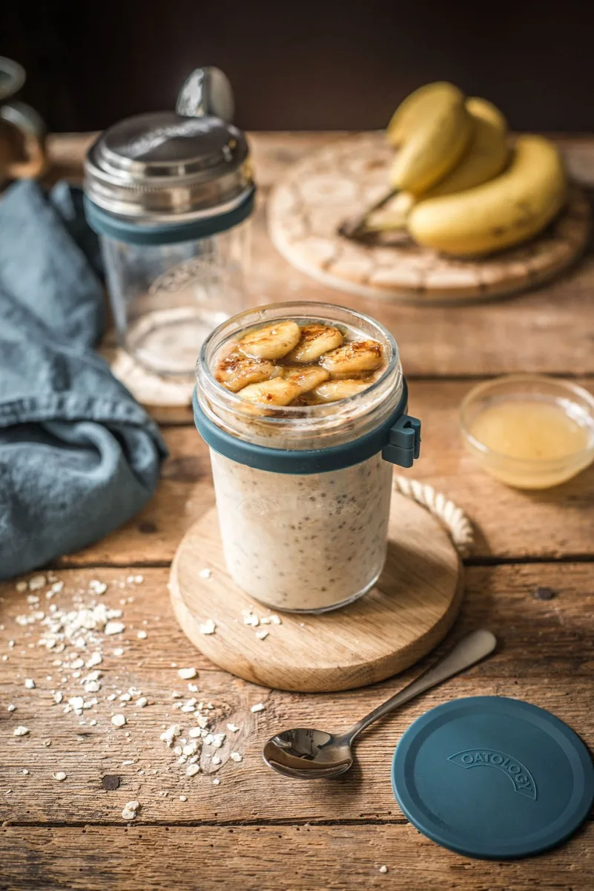

Banana Bread Overnight Oats
Banana bread overnight oats take about 10 minutes to prepare: stir 50g rolled oats, 140ml milk, a mashed ripe banana, 60g Greek yoghurt, 1 tsp chia seeds, ½ tsp cinnamon, ½ tsp vanilla, and 1 tsp honey in a jar, then refrigerate overnight. In the morning, warm the last of the banana into a caramelised topping. One jar comes to roughly 500 calories, with about 18g of protein and 9g of fibre, more protein than most of our recipes thanks to the Greek yoghurt.
It is one of two recipes we filmed (27 seconds, below). Watch it made, then let the fridge do the overnight work and finish with the warm banana on top.

Watch it made (27 seconds)
The whole recipe, jar to fridge to topping. Watch on YouTube
The recipe
Ingredients
- 140ml milk of choice (just below the milk line)
- 50g / generous ½ cup rolled oats (one lid)
- 1 medium ripe banana
- 60g Greek yoghurt
- 1 tsp chia seeds
- ½ tsp ground cinnamon
- ½ tsp vanilla extract
- 1 tsp honey, or sweetener of choice
- A pinch of sea salt
- Olive oil, extra honey, and a pinch of cinnamon, for the caramelised banana topping
Method
- Add 140ml milk just below the milk line on your jar.
- Measure and add one portion of oats (50g) using the lid.
- Mash ⅔ of the banana in a separate bowl, then stir it into the oats with the Greek yoghurt.
- Mix in the chia seeds, ground cinnamon, vanilla extract, honey, and a pinch of sea salt.
- Cover and refrigerate overnight.
- When ready to serve, warm the remaining sliced banana in a small pan with a little olive oil, a pinch of cinnamon, and a squeeze of honey until softened.
- Spoon the caramelised banana on top.
Tips and variations
- Even more protein: use 0% Greek yoghurt, or stir a scoop of unflavoured protein powder into the base.
- Make it vegan: swap the Greek yoghurt for a thick plant-based one and the honey for maple syrup, in the jar and on the caramelised banana.
- No pan, no problem: skip the caramelised topping and mash the whole banana into the jar, or finish with fresh banana slices and a dusting of cinnamon.
The jar we make it in
Every recipe on this site is written around the OATOLOGY jar: the lid measures the oats, the milk line measures the milk, and the sealed lid means it travels without leaking. No scales, no guesswork. Your own jar works too, anything sealable with room for a good stir.
Get the OATOLOGY jar on Amazon 2-pack, amazon.co.uk Weighing up options? Our honest guide to overnight oats jarsYour questions, answered
How long do banana bread overnight oats last in the fridge?
Banana bread overnight oats last up to 3 days in a sealed jar in the fridge, kept at 5°C or below (the Food Standards Agency's recommended fridge temperature). The mashed banana softens the base as it sits, so day one or two is best. Add the caramelised banana topping fresh, just before eating.
Why use a ripe, spotty banana for banana bread overnight oats?
Banana bread overnight oats need a ripe, spotty banana because that is where the sweetness and the banana-bread flavour live. As a banana ripens its starch turns to sugar, so a spotty one mashes smoothly and sweetens the jar with no extra sugar. A firm yellow banana tastes flat and mashes into lumps.
Can you skip the caramelised banana topping?
Banana bread overnight oats still work without the caramelised topping: mash the whole banana into the jar instead of two-thirds. The 2-minute stovetop step is worth it though, because warming sliced banana in olive oil, honey, and cinnamon deepens the flavour and adds a warm-against-cold contrast.
How much protein is in banana bread overnight oats?
Banana bread overnight oats have about 18g of protein per jar, higher than most of our recipes because 60g of Greek yoghurt goes into the base. The whole jar is roughly 500 calories with about 9g of fibre, made with semi-skimmed milk. Swap in 0% Greek yoghurt to push protein past 20g.
Can you make banana bread overnight oats vegan?
Yes, banana bread overnight oats can be vegan with two swaps: use a plant-based yoghurt in place of the Greek yoghurt, and maple syrup instead of the honey, in the jar and on the caramelised banana. As written the recipe is vegetarian, not vegan, because of the dairy yoghurt and honey.
A closer look


